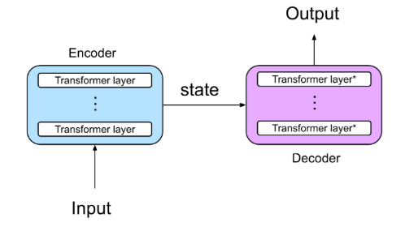
Introduction to Deep Learning
Alex Sanchez, Ferran Reverter and Esteban Vegas
Neural Networks
- ANNs may have distinct levels of complexity.
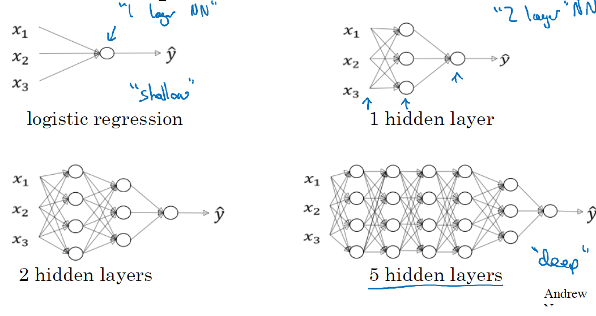
Source: ‘Deep Learning’ course, by Andrew Ng in Coursera & deeplearning.ai
Shallow NNs limitations
Shallow Networks are successful at solving many problems
But they are not free from limitations:
Limited ability to model complex patterns.
Struggle to capture non-linear relationships
Limited expressiveness for tasks like image recognition and natural language processing.
Prone to overfiting with small datasets
Inability to learn hierarchichal features
From ANN to Deep learning
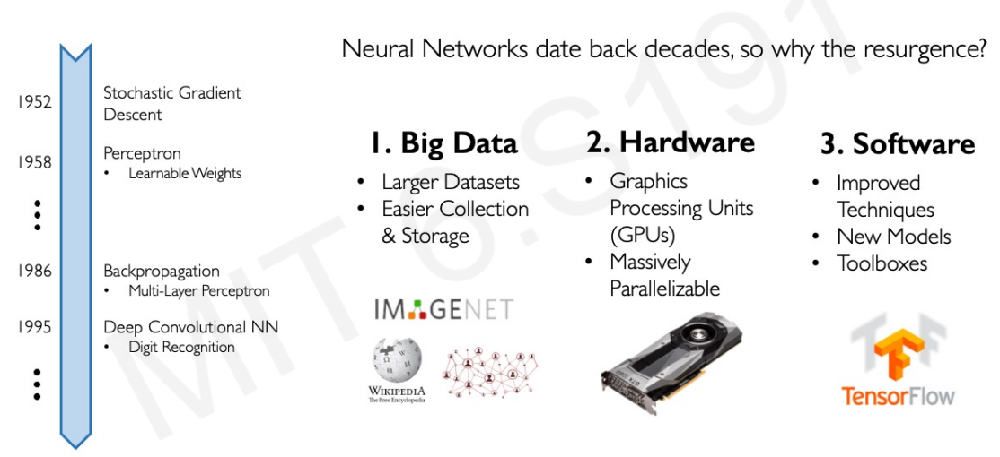
Why Deep Learning Now?
From Shallow to Deep NNs
“Deep Neural networks” are NNs with several hidden layers.
Real shift from Shallow to DNNs did not (only) come arrive from noticing that newtorks with more layers were able to perform better, in spite of their huge number of parameters.
It mainly arrived by realizing that
While some tasks, such as digit recognition, could be solved decently well using a “brute force” approach,
Other, more complex, such as distinguishing a human face in an image, are hard to solve witht that “brute” force approach.
But can be solved using Deep Neural Networks
Structured-Unstructured data
- Problems that can be better solved using DNNs are often associated with non-structured data.
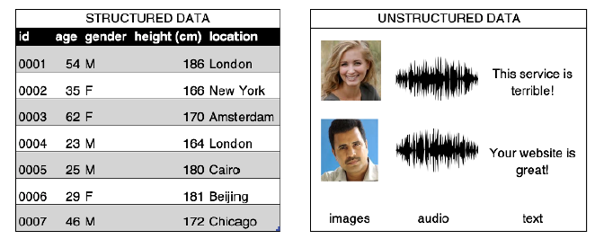
‘Source: Generative Deep Learning. David Foster (Fig. 2.1)’
Images are unstructured data
Task: Distinguish human from non-human in an image
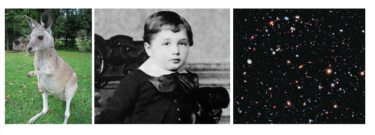
Source: ‘Neural Networkls and Deep Learning’ course, by Michael Nielsen
Example: Face recognition
Can be attacked similarly to the digit identification,
Cost of training would be much higher.
Alternatively: try to solve the problem hierarchically.
- We start by trying to find edges in the figure
- In the parts with edges look around to find face pieces, a nose, an eye, an eyebrow …
- As pieces are located, look for their optimal combination.
A hierarchy of complexity
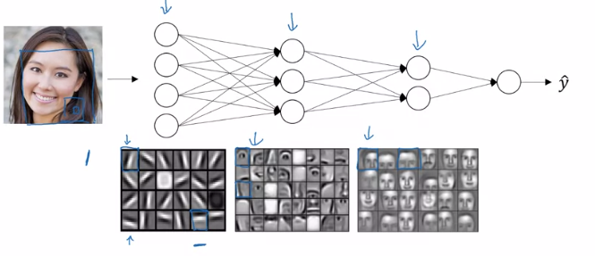
Source: ‘Deep Learning’ course, by Andrew Ng in Coursera & deeplearning.ai
A hierarchy of complexity
Each layer has a more complex task, but it receives better information.
If we can solve the sub-problems using ANNs,
We may be able to combine those NNs into a bigger network to solve the problem, here face-detection.
Deep Neural Networks
- Neural Networks with such structure are called Deep Neural Networks and are characterized by
- building progressively, from simple to complex structures,
- learning increasingly abstract representations at each layer and
- capturing higher-level concepts beyond individual features.
Automatic tuning
The success of Deep Neural Networks (DNNs) is largely due to their ability to automatically learn and adjust the complex hierarchy of representations, without requiring handcrafted feature extraction or manual tuning of weights and biases.
Shift from manual feature engineering to automatic tuning enabled by new or improved techniques such as:
Stochastic Gradient Descent (SGD) and Backpropagation: Allow learning optimal parameters through iterative updates.
Better Weight Initialization (e.g., Xavier/He initialization): Improve convergence and training stability.
Regularization techniques (Dropout, Batch Normalization, L2 penalties): Prevent overfitting and stabilized learning.
Shallow vs Deep NNs
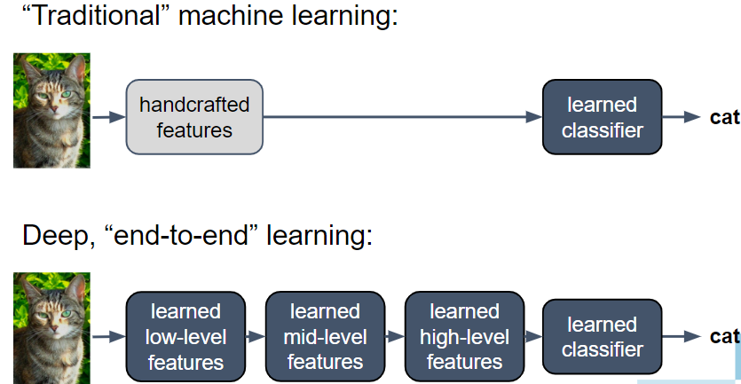
Source: ‘Deep Learning’ course, by Andrew Ng in Coursera & deeplearning.ai
Deep Learning Architectures
The hierarchical approach to solve complex problems -especially with unstructured data- leads to the development of diverse deep learning architectures, each designed to tackle specific challenges.
- Convolutional Neural Networks (CNNs) for image and spatial data processing.
- Recurrent Neural Networks (RNNs) & Transformers for sequential data: time series, natural language processing.
- Autoencoders & Variational Autoencoders (VAEs): for unsupervised learning, anomaly detection, and data compression.
- Generative Adversarial Networks (GANs) For generating realistic synthetic data including: images, text, and audio.
- Graph Neural Networks (GNNs): to process relational and structured data, such as social networks and molecular structures.
Convolutional Neural Networks
CNNs are specialized for processing grid-like data, such as images.
They use convolutional layers to detect spatial hierarchies in data.
Primary use: Computer vision (image classification, object detection, segmentation, etc.).
CNNs Architecture

CNN Architecture
Source: Wikipedia
CNN Models & Applications
Models: LeNet-5, AlexNet, VGG, ResNet, EfficientNet.
Applications:
Medical image analysis (tumor detection, X-ray analysis).
Facial recognition.
Autonomous vehicles (object detection & tracking).
Real-time video processing.
Recurrent NNs (RNNs)
RNNs contain a hidden state, which allows them to retain information from previous time steps.
RNNs are able to handle sequential data by incorporating information from previous inputs.
RNNs are effective in capturing short-term dependencies in sequences.
Long term dependencies aren’t managed weel due to vanishing gradient problem.
RNN Architectures
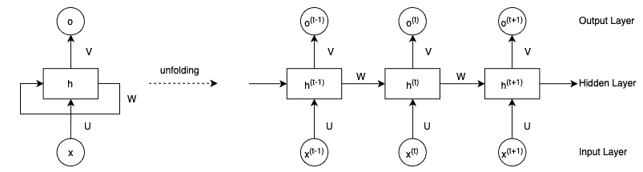
A Recursive Neural Network
Source: From RNNs to Transformers
Models & Applications
Models: Vanilla RNNs, Elman Networks, Jordan Networks.
Applications:
Speech recognition.
Handwriting recognition.
Predictive maintenance in industrial applications.
Time series forecasting (financial data, weather prediction).
Long Short-Term Memory (LSTM)
LSTM Networks improve over traditional RNNs by solving the vanishing gradient problem.
They introduce memory cells that selectively retain important information over long sequences.
Primary use: Long-term dependency learning in sequential data.
LSTM Architecture
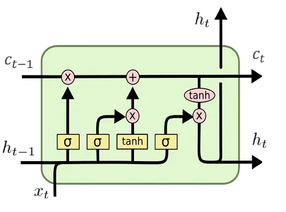
Source: From RNNs to TransformersLSTM Models & Applications
Models: Vanilla LSTMs, Bidirectional LSTMs, Attention-based LSTMs.
Applications:
- Machine translation.
- Speech synthesis.
- Music generation.
- Sentiment analysis.
Transformers
Transformers revolutionized deep learning by replacing sequential processing with self-attention mechanisms.
Self-attention allows the model to weigh the importance of different input tokens when making predictions.
It can capture long-range dependencies without the need for sequential processing.
Primary use: Natural Language Processing (NLP) & Large-scale sequence modeling.
Transformer Architecture
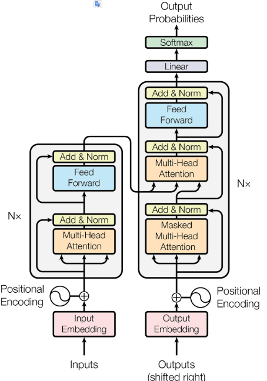
Models & Applications
- Models: BERT, GPT, T5, Transformer-XL.
- Applications:
- Chatbots (ChatGPT, Bard, Bing AI).
- Automated text summarization.
- Machine translation (Google Translate, DeepL).
- Code generation and AI-assisted programming.
Autoencoders & Variational AEs
Autoencoders learn to compress and reconstruct data by reducing input dimensionality and mapping it to a latent vector that represents essential features.
VAEs introduce probabilistic modeling, generating latent representations that allow for controlled data synthesis.
Unlike traditional autoencoders, VAEs do not map data to a fixed latent vector but to a probability distribution
This enables smoother interpolations and diverse outputs.
Primary use: Dimensionality reduction, anomaly detection, and generative modeling.
- VAEs particularly useful in generative tasks, such as creating synthetic images or text.
Autoencoder & VAE Architectures
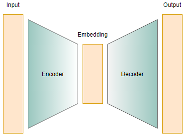
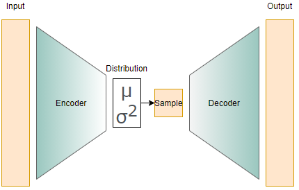
Source: AE & VE
Models & Applications
Models: Denoising Autoencoders, Variational Autoencoders (VAEs).
Applications:
Anomaly detection (fraud detection, industrial defect detection).
Image denoising and inpainting.
Feature extraction and dimensionality reduction.
Generating synthetic data.
Generative Adversarial Networks
GANs consist of two networks: a generator and a discriminator.
The generator tries to create realistic data, while the discriminator evaluates authenticity.
Primary use: Data generation (images, videos, text, and music).
GAN Architecture
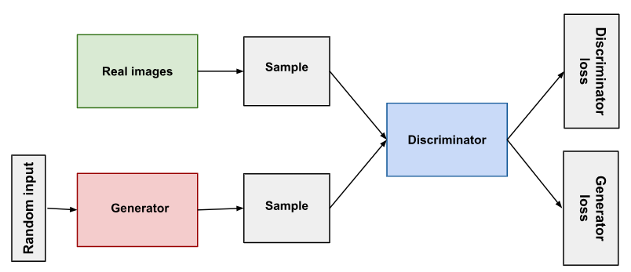
GAN Models & Applications
Models: DCGAN, CycleGAN, StyleGAN, BigGAN.
Applications:
Deepfake generation.
Super-resolution (enhancing image quality).
Data augmentation for training AI models.
Synthetic image and text generation.
A short mathematical digression: Tensors
Tensors
Deep learning is filled with the word “tensor”,
What are Tensors any way?
- R users: familiar with vectors (1-d arrays) and matrices (2-d arrays).
- Tensors extend this concept to higher dimensions.
- Can be seen as multi-dimensional arrays that generalize matrices.
See the Wikipedia for a nice article on tensors
Why tensors?
Working with tensors has many benefits:
- Generalization: Tensors generalize vectors and matrices to an arbitary number of dimensions,
- Flexibility: can hold a wide range of data types.
- Speed: Use of tensors facilitates fast, parallel processing computations.
One and two dimensional tensors
Vectors:rank-1 tensors.
Matrices: rank-2 tensors.
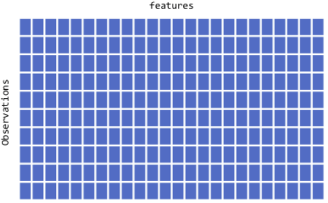
Rank three tensors
Arrays in layers.
Typic use: Sequence data
- time series, text
- dim = (observations, seq steps, features)
Examples
- 250 days of high, low, and current stock price for 390 minutes of trading in a day;
- dim = c(250, 390, 3)
- 1M tweets that can be 140 characters long and include 128 unique characters;
- dim = c(1M, 140, 128)
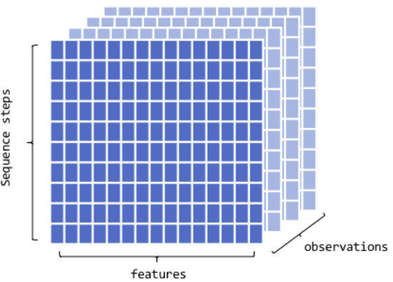
Rank four tensors
Layers of groups of arrays
Typic use: Image data
- RGB channels
- dim = (observations, height, width, color_depth)
- MNIST data could be seen as a 4D tensor where color_depth = 1
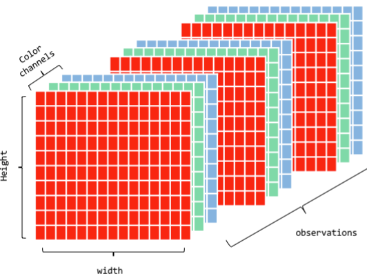
Rank five tensors
Typic use: Video data
- samples: 4 (each video is 1 minute long)
- frames: 240 (4 frames/second)
- width: 256 (pixels)
- height: 144 (pixels)
- channels: 3 (red, green, blue)
Tensor shape (4, 240, 256, 144, 3)
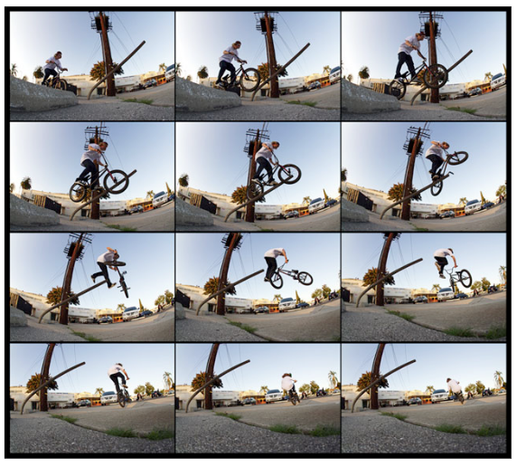
One can always reshape
Each DNN model has a given architecture which usually requires 2D/3D tensors.
If data is not in the expected form it can be reshaped.
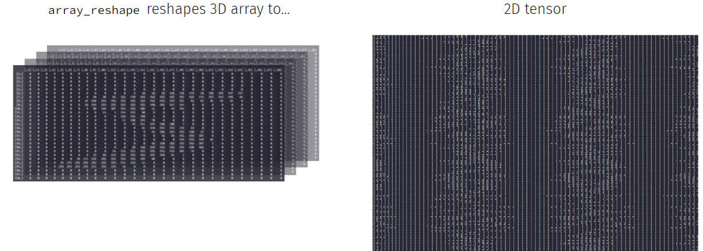
See Deep learning with R for more.
Deep Learning Software
Which programs for DL?
TensorFlow
- Open-source DL framework developed by Google.
- Flexible model development
- Optimized for distributed computing and performance
- High level APIS like Keras, in Python and R.

PyTorch
- Open-source DL framework developed by facebook.
- User-friendly interface and dynamic computational graph features with intuitive debugging and experimentation.
- Highly integrated with Numpy

Keras
- High-level neural networks API running on top of TensorFlow, CNTK, or Theano,
- Emphasizes simplicity and ease of use.
- AVailable in Python and R
The Keras pipeline
- Training and using a model in keras is intended to be done through the usual steps of a ML worfflow
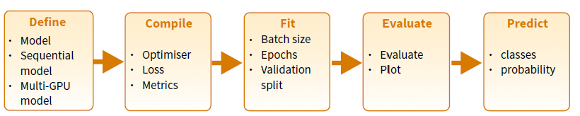
A keras cheat sheet
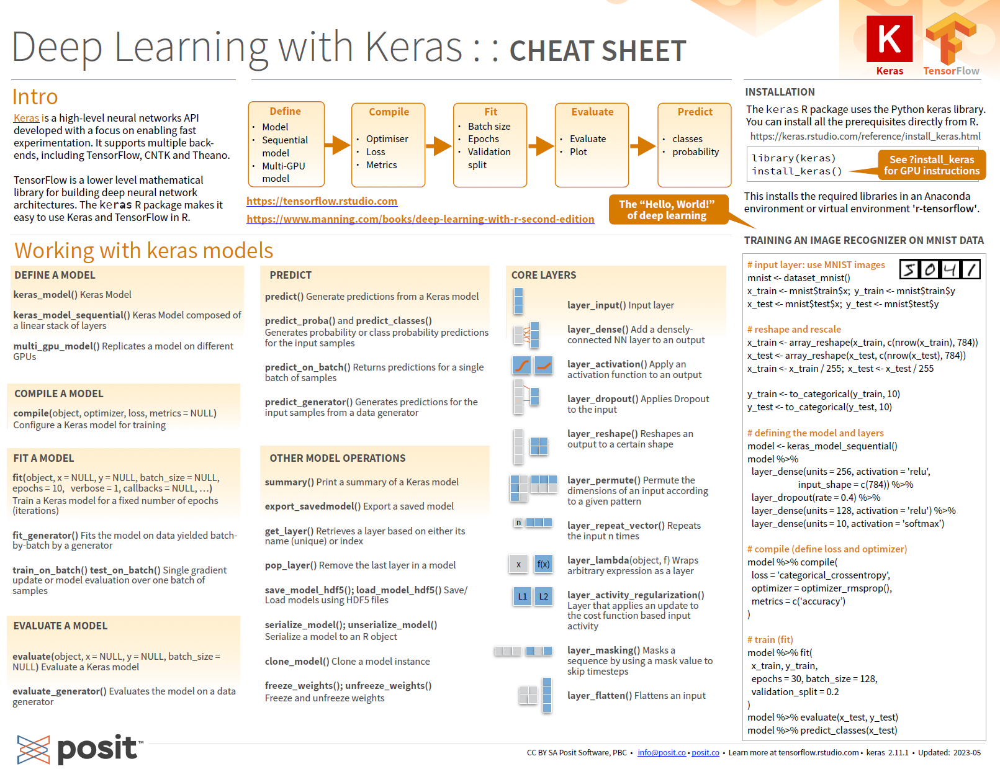
References and Resources
Resources (1)
Courses
Books
Resources (2)
Workshops
- Deep learning with R Summer course
- Deep learning with keras and Tensorflow in R (Rstudio conf. 2020)